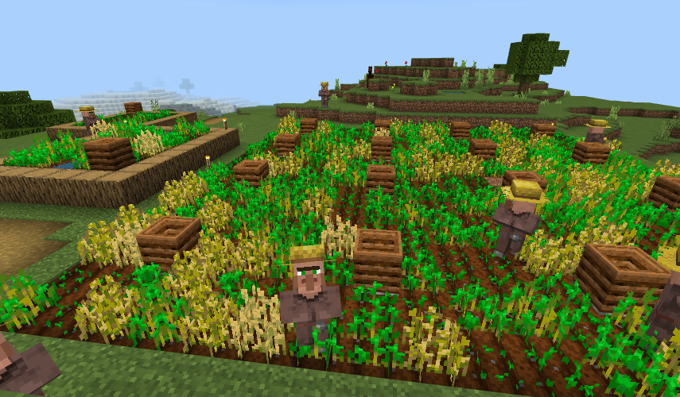
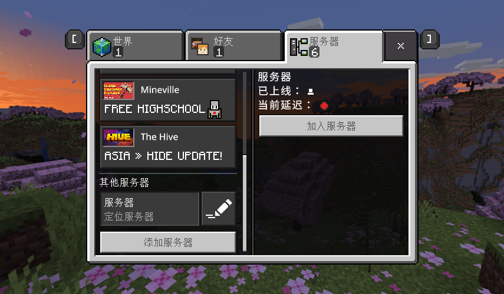
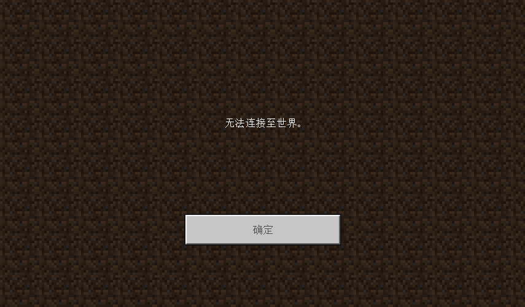
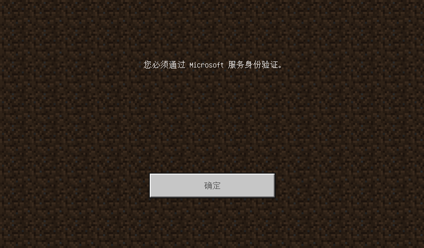

服务器的运营模式可能会变更（包括开放时间，连接方式），请定期留意此页面的更新。
养老首选，快速催眠！体验原版挖矿、村庄建设和新版本更新的新事物！即将在不影响原版玩法的基础下增添优化向行为包，从而丰富玩法！
该服务器不添加任何第三方材质包/行为包，确保最原汁原味的游戏体验，不过由于原房主跑图过远发展地图，因此出生点较为荒凉，可以请 OP 带你到核心地带。
建筑中心：尽情发挥创意，位于雪地、沙漠和森林的交汇处，环境丰富
村庄建设：繁殖村民并和 TA 交易，获得用工作台无法合成的高级物品
实在编不下去了，自己看官方更新内容吧，至少比冈曷版玩法丰富。。
BugTea
QQ：757169500/2896431618
BiliBili：513308856
游戏内角色名：BUGTeas36514/BUGTeaSecond
BUGTeas36514、BUGTeaSecond、LuoXue6794
1.20.51.01（国际版，不分设备平台，冈曷勿扰）
7*24 小时（不排除受外部条件影响意外停服）
由于安全原因，原 OpenFRP 地址已停用。请使用虚拟网络软件“Tailscale”，并向我申请服务器授权链接，通过该链接将设备“bugteaserver”添加到虚拟网中，使用下方地址进服。教程：使用 Tailscale 连接到服务器
以下两个地址均指向同一服务器：
服务器地址：100.115.57.26 端口：19132（需要安装登录 Tailscale 并访问分享链接添加服务器）
仅支持微软账号（无需正版，登录即可）
游戏模式(gamemode)：生存(survival)
难度(difficulty)：困难(hard)
成就：已禁用
模拟距离(view-distance)：4
已启用死亡不掉落(/gamerule keepInventory true)
这里提供了一套完整的 Minecraft（Java/基岩版）的安装配置指南，欢迎参考！Minecraft 安装和配置指南
由于基岩版的检测功能存在 Bug，导致很多时候服务器信息会显示“定位服务器”，且无法查看延迟：
其实不用管它，直接加入服务器就行。
报错原因通常是网络异常或 Tailscale 未连接（如果你使用的是第二个服务器地址），如果排除了问题且多次尝试依旧如此，则服务器出现异常，需要等待我解决（一般会在群里说明）
报错原因通常是未登录微软账号（非正版、颇解也可以登录），或者系统时间不正确（请检测系统日期和时间设置），又或者微软验证系统崩了（极少数）
"